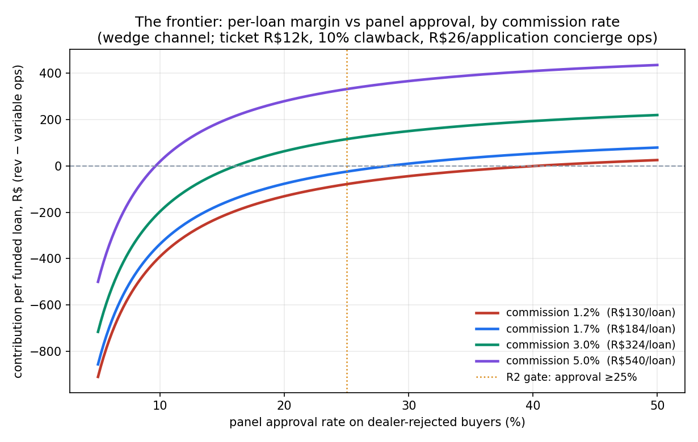
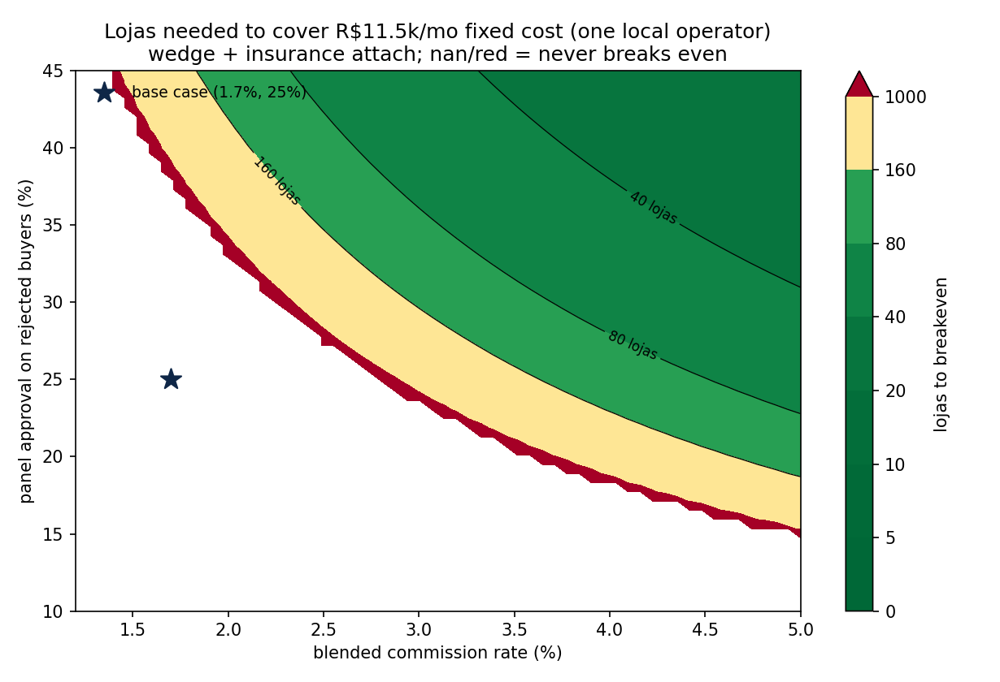

The 2026-06-10 review's #1 finding: every prior model priced the abandoned lead-gen version; the live thesis (earn the origination) had no P&L. This is that P&L. **Headline: at corpus-typical commission (1.7%), the rejected-buyer wedge — the thesis's flagship pitch — is negative per loja even before fixed costs. The business only clears via (a) commission ≥~2.5–3% and/or (b) converting lojas to whole-flow F&I. The venture-defining variable is no longer just CAC — it's the commission rate**, which is a Phase-0 contract read, not a field test.
Revenue per funded loan = ticket × commission × (1 − clawback) = R$12,000 × 1.7% × 0.9 = R$184 (~$34).
Per weak loja (~30 motos/mo → ~15 finance applicants → ~6 dealer-bank rejects), at the R2 gate thresholds (panel approval 25%, approved→funded 50%):
| Scenario | Funded /loja/mo | Contribution R$/loja/mo | Lojas to cover 1 operator (R$11.5k/mo) | Lojas for ~$500k/yr gross |
|---|---|---|---|---|
| S1 wedge-only (uncontested commission) | 0.75 | −118 | never | 1,634 |
| S2 wedge + insurance attach (30% × R$150) | 0.75 | −85 | never | 1,312 |
| S3 whole-flow F&I takeover (all applicants, 50/50 commission split w/ dealer) | 6.30 | +372 | 31 | 261 |
Variable ops alone (concierge re-keying ~R$26/application across all 6 rejects + R$100/mo loja BD) exceed wedge revenue (0.75 × R$184 ≈ R$138). The wedge is structurally thin: you pay processing on every reject but collect on ~1 in 8.

Per-loan margin vs panel approval, by commission: at 1.2% commission the wedge needs >40% panel approval just to break even per-loan; at 1.7%, ~28%; at 3%, ~16%; at 5%, ~10%. The R2 gate (25%) only clears with commission ≳2.5%.

Lojas needed to cover one local operator (wedge + insurance attach): the base case (1.7%, 25%) sits in the never-breaks-even region. The viable (green) region wants commission ≥3% and approval ≥25%, where 20–60 lojas cover the fixed base.
Reject volume (6/loja/mo) and ops cost (R$26/app) are estimates — bigger lojas or cheaper processing shift the frontier favorably; a softer entrada (funded <50%) shifts it against. Commission is THE uncertainty — both directions. The model excludes incorporation/cert one-offs and any paid CAC (paid traffic already ruled out; dealer-QR marginal CAC ≈ BD line). Code: workbench/latam-2w-aggregator-pnl/model.py (rerun with any parameter set).
"Capital-light aggregator" survives only as wedge-to-whole-flow: enter on rejected buyers, convert the loja to full F&I within months, attach insurance at volume. Phase-0 now has a sharper job: read the commission tables first — a blended take ≥~2.5–3% is the existence condition for the whole venture.